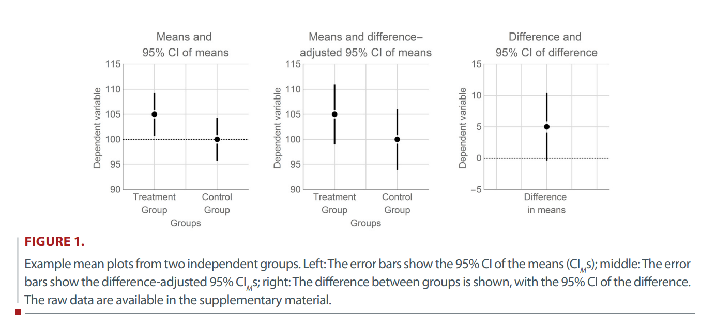

Workshop: “Handling Uncertainty in your Data”
R project for the precision workshop.cis.R).tidyverse (library(tidyverse)) at the beginning of your script.Note: We show different packages that help us with confidence interval calculations, some of which may have conflicting functions. This is why in this presentation, we call each package explicitly, e.g., confintr::ci_mean().
Data about the size of three different species of iris flowers.
The package confintr offers a variety of functions around confidence intervals. Default here: Student’s \(t\) method.
Two-sided 95% t confidence interval for the population mean
Sample estimate: 1.326
Confidence interval:
2.5% 97.5%
1.269799 1.382201 Also available: Wald and bootstrap CIs.
See Cousineau, 2017 - more about data viz later!
iris %>%
filter(Species %in% c("setosa", "versicolor")) %>%
summarise(
ci_lower = mean(Petal.Width) - se(Petal.Width) * z_CI_t(Petal.Width, .95),
ci_upper = mean(Petal.Width) + se(Petal.Width) * z_CI_t(Petal.Width, .95),
.by = Species
) Species ci_lower ci_upper
1 setosa 0.2160497 0.2759503
2 versicolor 1.2697993 1.3822007iris %>%
filter(Species %in% c("setosa", "versicolor")) %>%
summarise(
ci_lower = mean(Petal.Width) - se(Petal.Width) * sqrt(2) * z_CI_t(Petal.Width, .95),
ci_upper = mean(Petal.Width) + se(Petal.Width) * sqrt(2) * z_CI_t(Petal.Width, .95),
.by = Species
) Species ci_lower ci_upper
1 setosa 0.2036439 0.2883561
2 versicolor 1.2465202 1.4054798with(
iris,
confintr::ci_mean_diff(
Petal.Width[Species == "versicolor"],
Petal.Width[Species == "setosa"]
)
)
Two-sided 95% t confidence interval for the population value of
mean(x)-mean(y)
Sample estimate: 1.08
Confidence interval:
2.5% 97.5%
1.016867 1.143133 t.test() output by default!
Welch Two Sample t-test
data: Petal.Width[Species == "versicolor"] and Petal.Width[Species == "setosa"]
t = 34.08, df = 74.755, p-value < 2.2e-16
alternative hypothesis: true difference in means is not equal to 0
95 percent confidence interval:
1.016867 1.143133
sample estimates:
mean of x mean of y
1.326 0.246 Note that we still are comparing two means, so as before, the CI is “difference adjusted” using \(\sqrt2\).
afex. id task stimulus density frequency length item rt log_rt correct
1 N1 naming word high low 6 potted 1.091 0.08709471 TRUE
2 N1 naming word low high 6 engine 0.876 -0.13238919 TRUE
3 N1 naming word low high 5 ideal 0.710 -0.34249031 TRUE
4 N1 naming nonword high high 5 uares 1.210 0.19062036 TRUE
5 N1 naming nonword low high 4 xazz 0.843 -0.17078832 TRUE
6 N1 naming word high high 4 fill 0.785 -0.24207156 TRUEThe measures are highly correlated :-)
fhch2010_summary_wf <-
fhch2010_summary %>%
pivot_wider(
id_cols = id,
names_from = stimulus,
values_from = rt
)
fhch2010_summary_wf %>%
rstatix::cor_test(word, nonword)# A tibble: 1 × 8
var1 var2 cor statistic p conf.low conf.high method
<chr> <chr> <dbl> <dbl> <dbl> <dbl> <dbl> <chr>
1 word nonword 0.8 8.67 5.40e-11 0.658 0.884 Pearson# without adjusting
fhch2010_summary %>%
summarise(
ci_lower = mean(rt) - se(rt) * sqrt(2) * z_CI_t(rt, .95),
ci_upper = mean(rt) + se(rt) * sqrt(2) * z_CI_t(rt, .95),
.by = stimulus
) stimulus ci_lower ci_upper
1 word 0.8119932 1.056787
2 nonword 0.9912777 1.206521# adjust for correlation
word_cor <- cor.test(fhch2010_summary_wf$word, fhch2010_summary_wf$nonword)
fhch2010_summary %>%
summarise(
ci_lower = mean(rt) - se(rt) * sqrt(1 - word_cor$estimate) * sqrt(2) * z_CI_t(rt, .95),
ci_upper = mean(rt) + se(rt) * sqrt(1 - word_cor$estimate) * sqrt(2) * z_CI_t(rt, .95),
.by = stimulus
) stimulus ci_lower ci_upper
1 word 0.8793337 0.989447
2 nonword 1.0504891 1.147310As before, the \(t\)-test will give us a CI for the difference in means:
with(
fhch2010_summary,
t.test(
rt[stimulus == "word"],
rt[stimulus == "nonword"],
paired = TRUE
)
)
Paired t-test
data: rt[stimulus == "word"] and rt[stimulus == "nonword"]
t = -6.2944, df = 44, p-value = 1.245e-07
alternative hypothesis: true mean difference is not equal to 0
95 percent confidence interval:
-0.2171825 -0.1118359
sample estimates:
mean difference
-0.1645092 cohens_d() from the package effectsize: “CIs are estimated using the noncentrality parameter method (also called the ‘pivot method’)”; see further details at?effectsize::cohens_d().rstatix offers pipe-friendly statistical tests, and also calculates CIs.detailed = TRUE will give us confidence estimates for our \(t\)-test.iris %>%
filter(Species %in% c("setosa", "versicolor")) %>%
rstatix::t_test(Petal.Width ~ Species, detailed = TRUE) %>%
select(contains("estimate"), statistic:conf.high) #reduce output for slide# A tibble: 1 × 8
estimate estimate1 estimate2 statistic p df conf.low conf.high
<dbl> <dbl> <dbl> <dbl> <dbl> <dbl> <dbl> <dbl>
1 -1.08 0.246 1.33 -34.1 2.72e-47 74.8 -1.14 -1.02effectsize earlier)iris %>%
filter(Species %in% c("setosa", "versicolor")) %>%
rstatix::cohens_d(Petal.Width ~ Species, ci = TRUE)# A tibble: 1 × 9
.y. group1 group2 effsize n1 n2 conf.low conf.high magnitude
* <chr> <chr> <chr> <dbl> <int> <int> <dbl> <dbl> <ord>
1 Petal.Width setosa versicolor -6.82 50 50 -8.27 -5.96 large Option 1: Using the apa package.
Option 2: Using the rstatix package.
iris %>%
group_by(Species) %>%
rstatix::cor_test(Petal.Width, Petal.Length) #implicitly ungroups the data# A tibble: 3 × 9
Species var1 var2 cor statistic p conf.low conf.high method
<fct> <chr> <chr> <dbl> <dbl> <dbl> <dbl> <dbl> <chr>
1 setosa Petal.Wid… Peta… 0.33 2.44 1.86e- 2 0.0587 0.558 Pears…
2 versicolor Petal.Wid… Peta… 0.79 8.83 1.27e-11 0.651 0.874 Pears…
3 virginica Petal.Wid… Peta… 0.32 2.36 2.25e- 2 0.0481 0.551 Pears…Note: Only gives rounded values …
aov_words <-
aov_ez(
id = "id",
dv = "rt",
data = fhch2010_summary,
between = "task",
within = "stimulus",
# we want to report partial eta² ("pes"), and include the intercept in the output table ...
anova_table = list(es = "pes", intercept = TRUE)
)
aov_wordsAnova Table (Type 3 tests)
Response: rt
Effect df MSE F pes p.value
1 (Intercept) 1, 43 0.10 904.33 *** .955 <.001
2 task 1, 43 0.10 15.76 *** .268 <.001
3 stimulus 1, 43 0.01 77.24 *** .642 <.001
4 task:stimulus 1, 43 0.01 31.89 *** .426 <.001
---
Signif. codes: 0 '***' 0.001 '**' 0.01 '*' 0.05 '+' 0.1 ' ' 1In principle, apaTables offers a function for CIs around \(\eta_p^2\) …
# e.g., for our task effect
apaTables::get.ci.partial.eta.squared(
F.value = 15.76, df1 = 1, df2 = 43, conf.level = .95
)$LL
[1] 0.06851017
$UL
[1] 0.4511011… but it would be tedious to copy these values.
A little clunky function that can be applied to afex tables:
peta.ci <-
function(anova_table, conf.level = .9) { # 90% CIs are recommended for partial eta² (https://daniellakens.blogspot.com/2014/06/calculating-confidence-intervals-for.html#:~:text=Why%20should%20you%20report%2090%25%20CI%20for%20eta%2Dsquared%3F)
result <-
apply(anova_table, 1, function(x) {
ci <-
apaTables::get.ci.partial.eta.squared(
F.value = x["F"], df1 = x["num Df"], df2 = x["den Df"], conf.level = conf.level
)
return(setNames(c(ci$LL, ci$UL), c("LL", "UL")))
}) %>%
t() %>%
as.data.frame()
result$conf.level <- conf.level
return(result)
}The result of custom function that applies the apaTables function to our entire ANOVA table:
LL UL conf.level
(Intercept) 0.92985360 0.9656284 0.9
task 0.09399555 0.4224818 0.9
stimulus 0.48335736 0.7294335 0.9
task:stimulus 0.23280549 0.5584355 0.9Also see this blogpost by Daniel Lakens from 2014 about CIs for \(\eta_p^2\).
Learning objectives:
R (and write custom ones if needed) to report CIs around means, and common effect size estimates.Next: Visualizing uncertainty